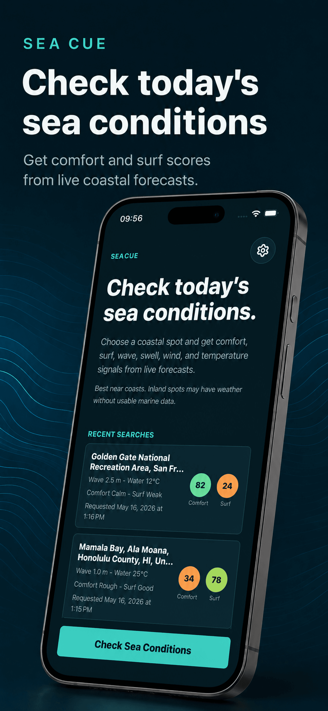
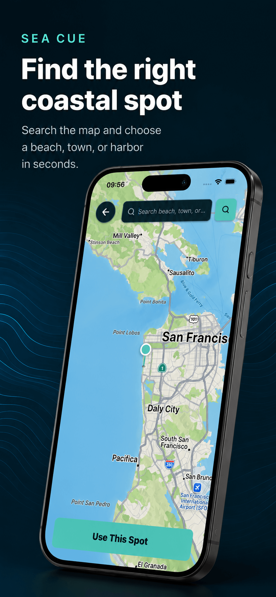
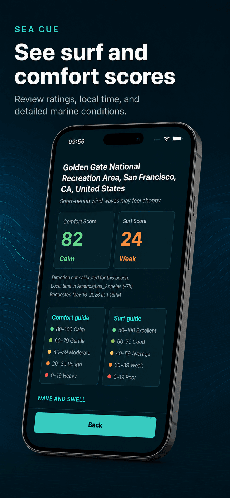

Sea Cue: Surf & Weather
Sea and surf forecast scores.
Sea Cue helps you choose better sea and surf spots with simple forecast-based scores.
Choose Better Coastal Conditions
Pick a location on the map and get an easy-to-read prediction for sea comfort and surf quality. Sea Cue combines marine and weather forecast data such as wind, temperature, and other sea and air conditions into clear scores, ratings, and details, so you can quickly decide whether a place looks good for your next coastal trip, swim, walk, or surf session.
Sea Cue is designed for surfers, swimmers, beachgoers, coastal travelers, and anyone who wants a quick way to understand sea and wave conditions before heading out.
App Preview



Features
- Choose any location on the map;
- get a sea comfort score and surf quality score;
- view ratings based on forecast conditions;
- check weather, marine, wind, temperature, and local time details;
- save recent searches automatically;
- reopen previous predictions quickly;
- change the app language in Settings;
- use a clean, simple interface built for fast decisions.
Forecast-Based Guidance
Forecasts are predictions and may change. Always check local safety advice, official weather alerts, and real-time conditions before entering the water.
Find clearer sea conditions. Pick the right spot. Head out with better context.
Contact
For questions, feedback, or support, email mr.oleski.info@gmail.com.
Legal
Read the Terms and Conditions for details about using Sea Cue.